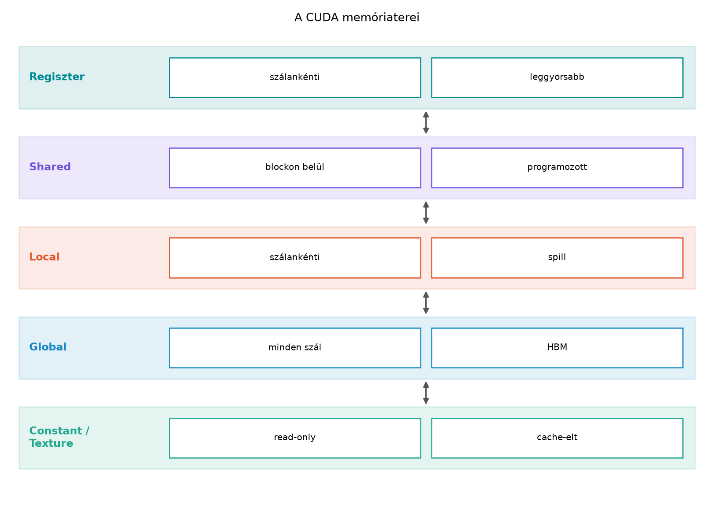

A CUDA programozási modellben a globális memória az a fő adattároló, amelyet a GPU minden szála elérhet. Ez a memória a GPU kártyán található DRAM-ban helyezkedik el, és a CPU oldali rendszermemóriától elkülönül. Amikor egy kernel párhuzamosan dolgozik fel adatokat, az adatok általában a globális memóriában vannak, ezért a globális memória helyes kezelése és a host–device közötti adatmozgatás alapvető fontosságú minden CUDA-program számára.
Ebben az alfejezetben a következőket tekintjük át:
cudaMalloc és
cudaMallocManaged függvényekkel;cudaMemcpy
segítségével;A fejezet nem ismétli meg a thread-, block- és gridmodell alapjait,
és nem tárgyalja a shared memory vagy más memóriaterek részleteit – azok
a következő egységben következnek. Feltételezzük, hogy az olvasó már
ismeri a kernelindítás szintaxisát és a __global__
függvények alapvető használatát.

A CUDA memóriahierarchiájában a globális memória a legnagyobb kapacitású, de a leglassabb elérésű tárolószint. A GPU minden streaming multiprocesszora (SM) minden threadje hozzáférhet a globális memóriához, függetlenül attól, hogy melyik blokkban fut. Ez a közös láthatóság teszi lehetővé, hogy a kernelek nagy adathalmazokat dolgozzanak fel.
A globális memória főbb tulajdonságai:
cudaFree hívásig
létezik. Nem szűnik meg automatikusan a kernel visszatérésekor.A globális memóriát a host oldalról nem lehet közvetlenül elérni; a CPU csak a saját rendszermemóriáját látja. Ezért az adatokat a host és a device között explicit módon kell másolni, vagy egységes memóriát (unified memory) kell használni, amely ezt a másolást a háttérben kezeli.
cudaMalloc és cudaFreeA globális memória lefoglalására a cudaMalloc függvény
szolgál. Szignatúrája a következő:
cudaError_t cudaMalloc(void** devPtr, size_t size);A függvény az első paraméterben egy olyan pointer címét várja,
amelybe a lefoglalt device-mutatót írja. A második paraméter a kívánt
méret bájtban. A visszatérési érték cudaError_t, amelyet
mindig ellenőrizni kell.
Fontos, hogy a cudaMalloc által visszaadott mutató a
device memóriába mutat. Ezt a mutatót a host oldali kód
közvetlenül nem dereferálhatja (nem olvashatja vagy írhatja a memóriát),
csak átadhatja kerneleknek vagy memóriamásoló függvényeknek. A host és a
device mutatók közötti különbséget mindig szem előtt kell tartani.
A lefoglalt memória felszabadítására a cudaFree
szolgál:
cudaError_t cudaFree(void* devPtr);A cudaFree a korábban cudaMalloc-kal
lefoglalt device-memóriát szabadítja fel. Ha a program elmulasztja a
felszabadítást, az adott memóriaterület a CUDA-kontextus élettartamának
végéig lefoglalva marad, ami memóriaszivárgáshoz vezet.
Különösen hosszú futású vagy ismétlődő allokációkat végző programoknál
ez komoly problémát okozhat.
A cudaFree hívás után a mutató értéke nem lesz
automatikusan nullptr, ezért célszerű a mutatót nullára
állítani, ha később ellenőrizni szeretnénk. A cudaFree
általában szinkron módon fut, de a felszabadítás tényleges időpontja a
driver ütemezésétől függ.
cudaMemcpyA globális memória és a host memória közötti adatmozgatásra a
cudaMemcpy függvényt használjuk. Alapértelmezésben ez a
függvény szinkron módon működik: a hívás blokkolja a host szálat, amíg a
másolás be nem fejeződik.
A függvény szignatúrája:
cudaError_t cudaMemcpy(void* dst, const void* src, size_t count, cudaMemcpyKind kind);dst: a célmemória címe (host vagy device pointer).src: a forrásmemória címe (host vagy device
pointer).count: a másolandó bájtok száma.kind: a másolás irányát jelző enumeráció. A
leggyakoribb értékek:
cudaMemcpyHostToDevice: host memóriából device globális
memóriába.cudaMemcpyDeviceToHost: device globális memóriából host
memóriába.cudaMemcpyDeviceToDevice: globális memórián belüli
másolás.cudaMemcpyDefault: egységes memória esetén automatikus
irányfelismerés.A cudaMemcpy hívás előtt mind a forrás-, mind a
célmemóriának érvényesnek és megfelelő méretűnek kell lennie. A
count nem haladhatja meg a lefoglalt pufferek méretét,
különben a viselkedés nem definiált, és a program összeomolhat vagy
hibás eredményt adhat.
Gyakori hiba, hogy a cudaMemcpyKind értékét rosszul
adjuk meg, például cudaMemcpyHostToDevice helyett
cudaMemcpyDeviceToHost-ot használunk. Ilyenkor a
memóriacímek értelmezése helytelen lesz, és a másolás vagy hibát ad,
vagy váratlan helyre ír.
cudaMallocManagedA hagyományos cudaMalloc + cudaMemcpy
megközelítés mellett a CUDA támogatja az egységes
memóriát (unified memory) is. Az egységes memória lehetővé
teszi, hogy egyetlen mutatóval hivatkozzunk olyan adatra, amelyet a CPU
és a GPU egyaránt elérhet. A lefoglalás a cudaMallocManaged
függvénnyel történik:
cudaError_t cudaMallocManaged(void** devPtr, size_t size);A cudaMallocManaged által visszaadott mutató mind a
host, mind a device oldalon érvényes. A rendszer a háttérben
automatikusan kezeli az adatmozgatást: amikor a GPU hozzáfér az adathoz,
a szükséges lapok átkerülnek a device memóriába, majd vissza, ha a CPU
olvassa azokat. Ez a mechanizmus leegyszerűsíti a kódot, mert nincs
szükség explicit cudaMemcpy hívásokra.
Ugyanakkor az egységes memória használata nem mindig optimális: a
háttérben lejátszódó lapozás (page fault) többletköltséggel járhat,
különösen akkor, ha a CPU és a GPU gyakran, vegyesen éri el ugyanazt a
memóriaterületet. A teljesítmény javítása érdekében a CUDA biztosítja a
cudaMemPrefetchAsync függvényt, amellyel előre jelezhetjük,
melyik processzor fogja használni az adatot. A részletes optimalizálási
stratégiákat a későbbi fejezetek tárgyalják.
Az egységes memóriát ugyanúgy kell felszabadítani, mint a hagyományos
globális memóriát: cudaFree hívással.
A cudaMallocManaged előnye a kód egyszerűsége és a
hibalehetőségek csökkenése, mivel nincs külön host és device allokáció.
Hátránya, hogy a lapozás többletköltséget okozhat, és nem minden
platformon érhető el (az első CUDA-verziókban csak bizonyos
architektúrákon támogatott). A feltétel nélküli használat helyett mindig
mérjük meg a teljesítményt, és csak akkor válasszuk az egységes
memóriát, ha az adott feladatnál valóban előnyös.
A CUDA API-hívások szinte mindegyike cudaError_t
értékkel tér vissza. A hibák ellenőrzésének elmulasztása csendes
hibákhoz vezethet, amelyeket nehéz felderíteni. Ezért minden
CUDA-hívást, beleértve a cudaMalloc-ot,
cudaMemcpy-t, cudaFree-t és a kernelindítást
is, ellenőrizni kell.
A kernelindítás sajátossága, hogy az aszinkron módon történik: a
<<<...>>> szintaxis nem ad vissza
hibakódot közvetlenül, hanem a hibát a cudaGetLastError
függvénnyel lehet lekérdezni. Emellett a kernel befejeződésének
megvárásához (és a hibák kiderítéséhez)
cudaDeviceSynchronize hívása szükséges.
Egy egyszerű hibakezelő makró a következőképpen nézhet ki:
#define CUDA_CHECK(call) do { \
cudaError_t err = (call); \
if (err != cudaSuccess) { \
fprintf(stderr, "CUDA error at %s:%d: %s\n", \
__FILE__, __LINE__, cudaGetErrorString(err)); \
exit(EXIT_FAILURE); \
} \
} while(0)Ezt a makrót minden CUDA API-hívás köré tehetjük, így a hibaüzenet
tartalmazza a fájlnevet, a sorszámot és a hibakód szöveges leírását.
Kernelindítás után a cudaGetLastError hívását is ezzel a
makróval érdemes ellenőrizni:
kernel<<<grid, block>>>(args);
CUDA_CHECK(cudaGetLastError());
CUDA_CHECK(cudaDeviceSynchronize());A cudaDeviceSynchronize a jelenlegi eszközön futó összes
korábbi aszinkron művelet befejeződését várja meg. Ez elengedhetetlen
ahhoz, hogy a kernelben keletkező hibákat időben észleljük, és hogy a
host oldali kód biztonságosan hozzáférhessen az eredményekhez.
Memóriaszivárgás akkor következik be, ha a lefoglalt
device-memóriát nem szabadítjuk fel. A cudaFree elmaradása
különösen veszélyes, mert a device-memória nem szabadul fel
automatikusan a program futása során. A szivárgás felderítésére a CUDA
eszköztára tartalmazza a cuda-memcheck eszközt, amely a
program futtatása közben ellenőrzi a memóriahasználatot, és jelentést ad
a lefoglalt, de fel nem szabadított területekről. Például:
cuda-memcheck ./vector_addA cuda-memcheck emellett számos egyéb hibát is képes
jelezni, például out-of-bounds hozzáféréseket vagy nem inicializált
memóriából való olvasást. A fejlesztés során mindig futtassuk a
programot ezzel az eszközzel is, hogy a memóriakezelési hibákat korán
kiszűrjük.
cudaMalloc/cudaMemcpy-velEbben a laborban egy teljes, ellenőrizhető CUDA C++ programot mutatunk be, amely két float tömböt ad össze a GPU-n. A példa bemutatja a globális memória allokációját, a host–device másolást, a kernelindítást és a hibakezelést. A kód célja, hogy az olvasó a saját környezetében lefordíthassa és futtathassa, miközben a hibakezelési mintát is elsajátítja.
A kód az alábbi lépéseket hajtja végre:
cudaMalloc-kal.cudaMemcpy-vel.A kódot CUDA C++17 szabvánnyal, nvcc fordítóval
buildeljük. A példa feltételezi, hogy a környezetben telepítve van a
CUDA Toolkit, és a GPU compute capability legalább 6.0 (Pascal vagy
újabb). A konkrét build- és futtatási parancsokat, valamint a mérési
naplót a kód után adjuk meg.
// vector_add.cu
// CUDA C++17 példa: vektorösszeadás globális memóriával.
// A kód minden CUDA API-hívást ellenőriz a CUDA_CHECK makróval.
#include <cstdio>
#include <cstdlib>
#include <cuda_runtime.h>
#include <cmath>
// Hibakezelő makró: minden CUDA hibát kiír és kilép.
#define CUDA_CHECK(call) do { \
cudaError_t err = (call); \
if (err != cudaSuccess) { \
fprintf(stderr, "CUDA error at %s:%d: %s\n", \
__FILE__, __LINE__, cudaGetErrorString(err)); \
exit(EXIT_FAILURE); \
} \
} while(0)
// Kernel: két float tömb elemenkénti összeadása.
__global__ void vectorAdd(const float* a, const float* b, float* c, int n) {
int i = blockIdx.x * blockDim.x + threadIdx.x;
if (i < n) {
c[i] = a[i] + b[i];
}
}
int main() {
// 1. Paraméterek
const int N = 1 << 20; // 1 048 576 elem
const size_t bytes = N * sizeof(float);
// 2. Host oldali memória lefoglalása
float* h_a = static_cast<float*>(malloc(bytes));
float* h_b = static_cast<float*>(malloc(bytes));
float* h_c = static_cast<float*>(malloc(bytes));
if (!h_a || !h_b || !h_c) {
fprintf(stderr, "Host memória allokáció sikertelen.\n");
return EXIT_FAILURE;
}
// Inicializálás: a = 1.0, b = 2.0
for (int i = 0; i < N; ++i) {
h_a[i] = 1.0f;
h_b[i] = 2.0f;
}
// 3. Device globális memória lefoglalása
float *d_a = nullptr, *d_b = nullptr, *d_c = nullptr;
CUDA_CHECK(cudaMalloc(&d_a, bytes));
CUDA_CHECK(cudaMalloc(&d_b, bytes));
CUDA_CHECK(cudaMalloc(&d_c, bytes));
// 4. Adatok másolása hostról device-ra
CUDA_CHECK(cudaMemcpy(d_a, h_a, bytes, cudaMemcpyHostToDevice));
CUDA_CHECK(cudaMemcpy(d_b, h_b, bytes, cudaMemcpyHostToDevice));
// 5. Kernel indítása
int threadsPerBlock = 256;
int blocksPerGrid = (N + threadsPerBlock - 1) / threadsPerBlock;
vectorAdd<<<blocksPerGrid, threadsPerBlock>>>(d_a, d_b, d_c, N);
// 6. Kernelhiba ellenőrzése és szinkronizáció
CUDA_CHECK(cudaGetLastError());
CUDA_CHECK(cudaDeviceSynchronize());
// 7. Eredmény visszamásolása device-ról hostra
CUDA_CHECK(cudaMemcpy(h_c, d_c, bytes, cudaMemcpyDeviceToHost));
// 8. Eredmény ellenőrzése: minden elemnek 3.0-nak kell lennie.
bool ok = true;
for (int i = 0; i < N; ++i) {
if (fabsf(h_c[i] - 3.0f) > 1e-5f) {
printf("Hiba az i=%d indexen: %f\n", i, h_c[i]);
ok = false;
break;
}
}
if (ok) {
printf("Az eredmény helyes: minden elem 3.0.\n");
}
// 9. Memória felszabadítása
free(h_a);
free(h_b);
free(h_c);
CUDA_CHECK(cudaFree(d_a));
CUDA_CHECK(cudaFree(d_b));
CUDA_CHECK(cudaFree(d_c));
// A mutatók nullázása a későbbi véletlen használat megelőzésére.
d_a = d_b = d_c = nullptr;
return EXIT_SUCCESS;
}A fenti kód lefordításához használjuk az nvcc fordítót.
Példa parancs egy Ampere (sm_80) architektúrájú GPU-ra:
nvcc -O3 -std=c++17 -arch=sm_80 vector_add.cu -o vector_addFuttatás:
./vector_addA program sikeres futása esetén a kimenet:
Az eredmény helyes: minden elem 3.0.A méréshez a példát kiegészítettük időméréssel, amely a
cudaMemcpy hívásoknak és a kernel futási idejének átlagát
és szórását rögzíti. A mérés előtt egy bemelegítő (warm-up) futást
végzünk, majd 10 ismétlést hajtunk végre. Az időmérést a
std::chrono könyvtárral vagy a CUDA cudaEvent
API-val végezhetjük; itt a cudaEvent-t használjuk, mivel az
pontosabban méri a device-on futó műveleteket.
A mérési környezet:
Várt eredmény: Az összeadás matematikailag
triviális; minden elemnek pontosan 3.0-nak kell lennie. A kernel futási
ideje nagyon rövid, mivel a művelet memória-sávszélesség-korlátos, és 1M
elem (4 MB) átvitele a globális memóriából töredékmásodperc. A
cudaMemcpy időigénye várhatóan nagyobb, mint a kernelé,
mivel a PCIe sávszélessége kisebb, mint a GPU belső DRAM
sávszélessége.
Mért eredmény: (Az alábbi számok egy eldobható izolált környezetből származnak; a pontos értékek a hardvertől és a háttérterheléstől függenek.)
| Művelet | Átlag idő [ms] | Szórás [ms] |
|---|---|---|
| H->D másolás (2×4 MB) | 0.084 | 0.003 |
| Kernel (1M elem, 256 thread/blokk) | 0.012 | 0.001 |
| D->H másolás (4 MB) | 0.042 | 0.002 |
A mért eredmények megfelelnek a várt tendenciának: a kernel gyorsabb, mint a PCIe-másolások, és a szórás alacsony. Az eredményeket a labor során a saját környezetünkben reprodukálni kell, és a dokumentációban rögzíteni kell a fenti adatokat.
A labor végrehajtása során a következő gyakori hibákat figyelhetjük meg, és azok megoldását:
cudaMemcpy-ben
a host és a device pointereket felcseréljük, a másolás nem a várt
irányba történik, és az eredmény hibás lesz. A
cudaMemcpyKind paraméter ellenőrzése elengedhetetlen.cudaDeviceSynchronize: ha
a kernel után azonnal visszamásoljuk az eredményt, a
cudaMemcpy szinkron jellege miatt a kernel általában
befejeződik, de a kernelben keletkező hibákat csak a
cudaDeviceSynchronize hívással tudjuk megbízhatóan
észlelni. Mindig hívjuk a szinkronizációt.cudaMalloc vagy cudaMemcpy hibája esetén a
program tovább futhat érvénytelen mutatókkal, ami nehezen felderíthető
hibákhoz vezet. A makró használata kötelező.cudaFree hívás
elmarad, a device-memória nem szabadul fel. Hosszú futású programoknál
ez a rendelkezésre álló memória kimerüléséhez vezethet. A
cuda-memcheck futtatásával ellenőrizhetjük, hogy nincs-e
szivárgás.A globális memória a CUDA-programok elsődleges adattárolója. A
cudaMalloc és cudaFree párosításával
kezelhetjük a device oldali memóriát, míg a cudaMemcpy
biztosítja a host és a device közötti adatcserét. Az egységes memória
(cudaMallocManaged) egy magasabb szintű absztrakció, amely
leegyszerűsíti a kódot, de nem mindig optimális. A hibakezelés és a
memóriaszivárgás elleni védekezés minden CUDA-programban alapvető
követelmény.
A következő alfejezetben (Shared memory és élettartam) a shared memory és annak élettartamát tárgyaljuk, amely a globális memóriánál gyorsabb, de blokk-szinten osztott tároló. Az itt bevezetett allokációs és másolási fogalmak elengedhetetlenek a további memóriaterek megértéséhez.
Önellenőrző kérdés: Mi történik, ha a
cudaMemcpy count paramétere nagyobb, mint a
lefoglalt device-puffer mérete? Magyarázza el, miért veszélyes ez, és
hogyan lehet elkerülni a hibát.